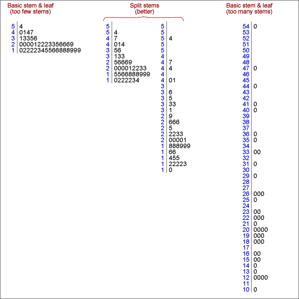

If you don't want to print now,
Information from the variation in data
Variation in data is not simply an annoyance — the variation itself can hold important information.
Simply sorting a data set into order can highlight features that are not obvious in the raw data, such as the lack of values between 3.4 and 4.9 in the data below.
| 6.1 | 5.2 | 7.9 | 2.3 | 3.4 |
| 1.4 | 5.3 | 7.1 | 3.2 | 2.8 |
| 5.1 | 6.9 | 6.1 | 3.4 | 5.2 |
| 5.5 | 2.0 | 1.3 | 4.9 | 6.4 |

Dot plots
Some ranges of values are more common than others — they have higher density.
The simplest graphical display of data that shows where there is high and low density is a dot plot. This shows each value as a cross (or dot) against a numerical axis.
The gap between 3.4 and 4.9 is more obvious on the right than in a textual list of values, whether ordered or not.
Jittering the crosses
In all but the smallest data sets, the crosses on a basic dot plot overlap, making it difficult to identify regions of high density.
Randomly moving crosses away from the axis reduces this problem by separating the crosses:
Note that the vertical jittering is random and therefore tells you nothing about the data.
Stacked dot plots
Stacking the crosses into columns is usually better than jittering them.

Stacking highlights regions of high density well (tall stacks).
Digits instead of crosses
Stem and leaf plots are closely related to stacked dot plots. The crosses are replaced by digits that provide a little more detail about the values that they represent.
Stems and leaves
In a stem and leaf plot, the axis is replaced by a column of 'stems' — the most significant digits of the values in the data. The digits that replace the crosses are called 'leaves' and give a further significant digit of each value on a stem.

A final refinement is to sort the leaves into increasing order on each stem.
Need for more flexibility
Sometimes basic stem and leaf plots are not flexible enough — there would be either too many or too few rows of leaves to show the varying density well.
Repeating each stem 2 times (with leaves 0-4 on the lower copy and leaves 5-9 on the upper one) or 5 times (with leaves 0-1, 2-3, 4-5, 6-7 and 8-9 on the different copies) gives intermediate numbers of stems.

Smoothness
When drawing a stem and leaf plot, the aim is for a smooth shape to the stem and leaf plot, and this is usually achieved by between 10 and 20 rows of leaves.
Drawing by hand
When data are analysed on a computer, a stacked dot plot usually describes a distribution of values more clearly than a stem and leaf plot.
However stem and leaf plots are easy to draw by hand:
To simplify drawing, values are truncated to give their stems and leaf digits, not rounded. For example, 7.98 and 7.90 would both be displayed as leaf '9' on the stem '7'.
Outliers
Values that are considerably larger or smaller than the bulk of the data are called outliers.
An outlier may have been incorrectly recorded, or there may have been other anomalous circumstances associated with it. Outliers must be carefully checked if possible. If anything atypical can be found, outliers should be deleted from the data set and their deletion noted in any reports about the data.
Outliers and skew distributions
Deciding whether a value is an outlier or not is affected by the shape of the distribution of values for the rest of the data.


Clusters
If a dot plot, stem and leaf plot or histogram separates into two or more groups of values (clusters), this suggests that there may be more fundamental differences between the 'individuals' in the groups.

Further investigation should be made of the individuals in the clusters to find whether they also differ in other ways.
If the clusters were less distinct, especially in small data sets, you would need external supporting evidence before concluding that the individuals separated into meaningful groups.
Distribution of values
Even when a data set has no outliers or clusters, the distribution of values also contains useful information. Important features are:
The concepts of centre and spread are particularly important.
Extra information
When only a single value is known from each individual (or plant, item, etc), all that can be discovered is the shape of the distribution of these values.
Additional information about each individuals may give insight into why some values are bigger or smaller than others. Different types of information may be available. The simplest is a unique name for the individuals — a textual label. These names may help us to understand why values are outliers or group into clusters in a dot plot or stem and leaf plot.
Multiple groups of individuals
Sometimes we know that the individuals belong to two or more groups before the data are collected or, equivalently, that they have different values of an extra categorical variable.
Information about groups is best displayed by plotting the separate groups against a common axis.

Back-to-back stem and leaf plots
Stem and leaf plots can be used to compare two groups of individuals, if drawn on different sides of a common column of stems. (They are less useful if there are three or more groups.)

Dangers of overinterpretation
Features in the distribution of a small data set may not be meaningful.
Be careful not to overinterpret patterns in small data sets. Clusters, outliers or skewness may appear by chance even if there is no meaningful basis to these features.
Pronounced outliers or clusters may be taken as indicative of something meaningful in the underlying process. However less pronounced outliers or clusters must be supported by outside evidence before these features can be interpreted as meaningful.